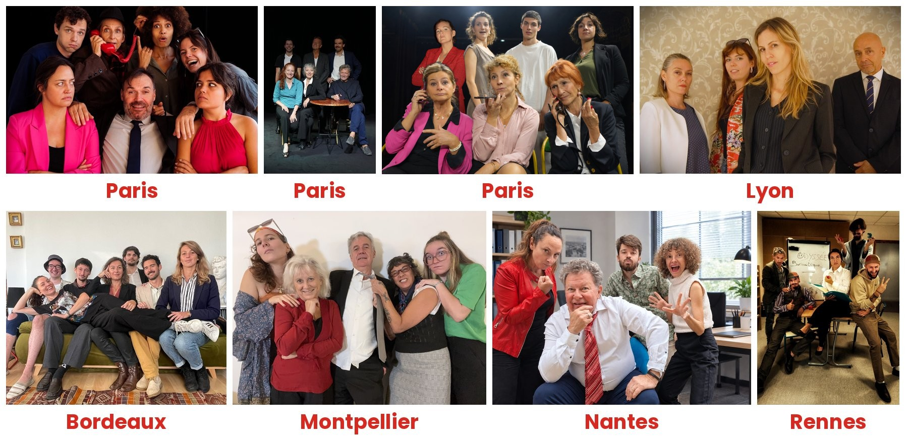
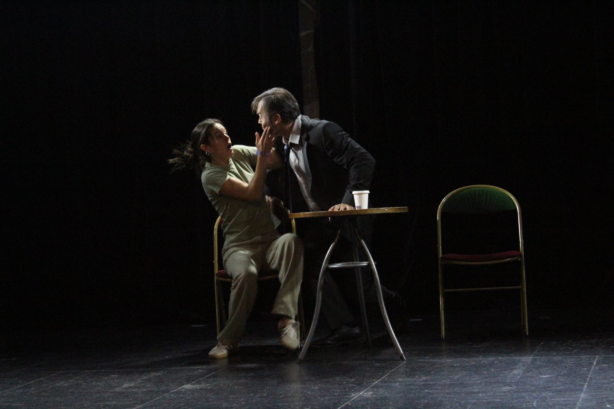
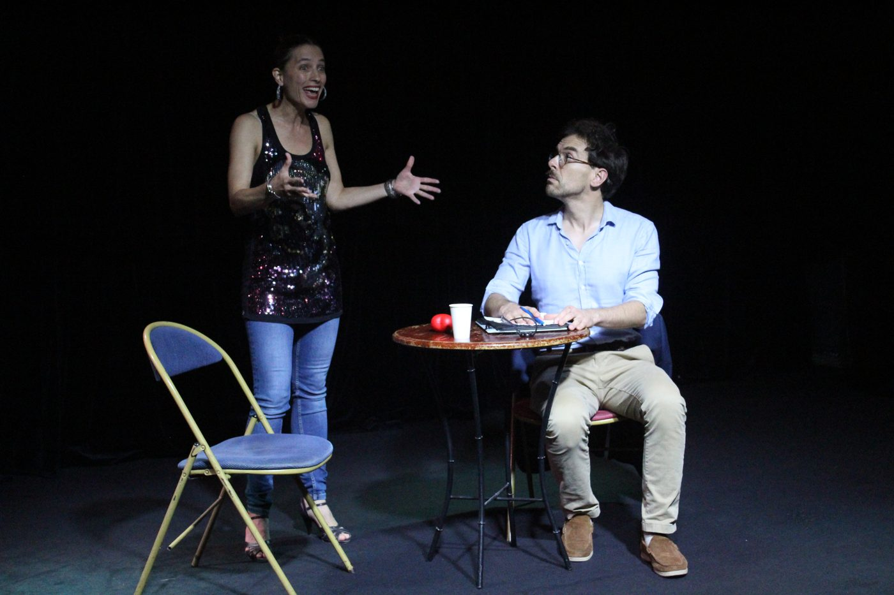
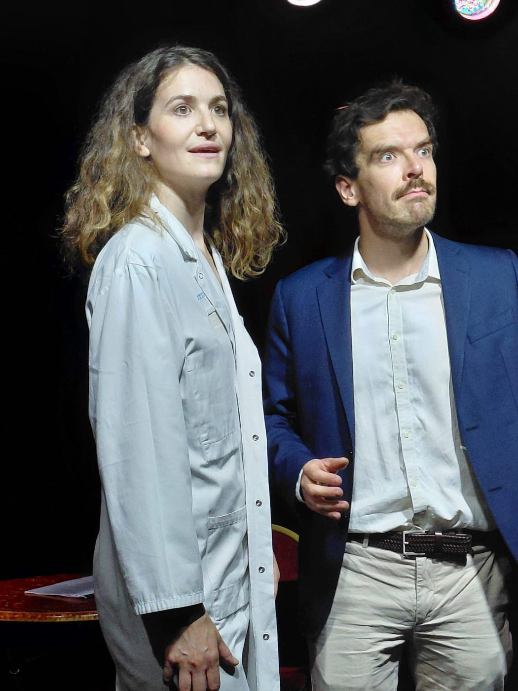
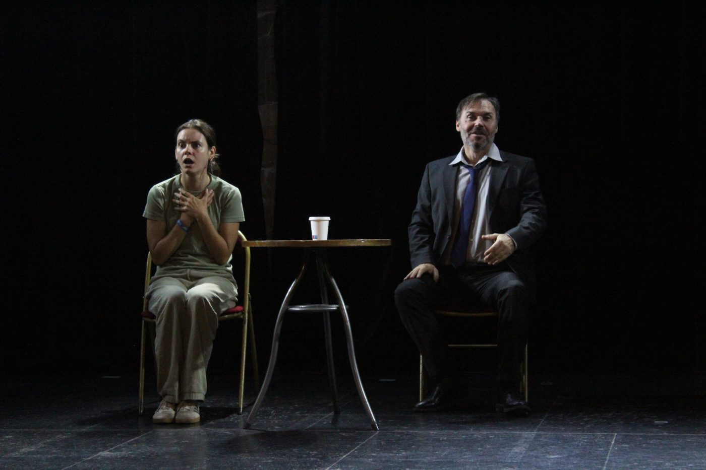
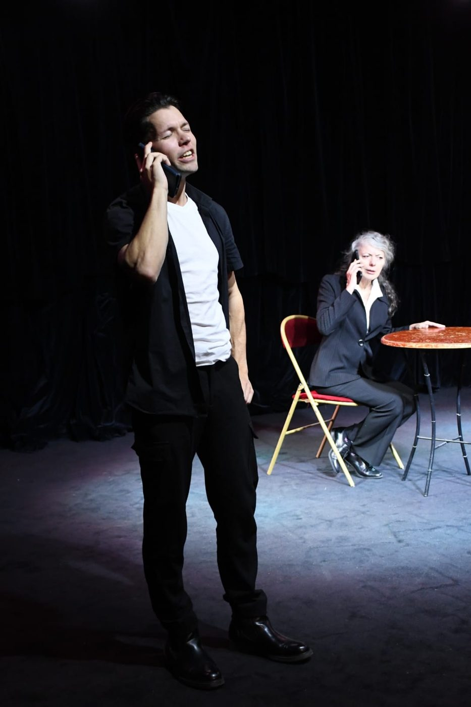

Communiqué de presse — novembre 2026
Ils ont mis le recrutement en pièce
ODYSSÉE BUREAUTIQUE recrute commercial terrain.
Vous êtes bac +5, pas trop jeune, pas trop vieux ?
Venez vendre nos ramettes, stylos et imprimantes.
(Ah oui… le patron préférerait une fille.)
Bienvenue chez ODYSSÉE BUREAUTIQUE :
Vous les connaissez tous. On a juste changé leurs noms.
Cette comédie raconte avec dérision l'entreprise, les managers, le recrutement, les candidats. Écrite par un professionnel du recrutement. Succès au festival OFF d'Avignon, elle a fait le tour de France dans 15 villes à guichets fermés.
Elle est aussi jouée dans les entreprises, les réseaux et les salons (Orange, La Poste, Safran, Schlumberger, L'Adresse Immobilier, CCI, ANDRH, Salon de la Franchise, salons de la création d'entreprise…) pour former les équipes au recrutement et au management. Elle est également jouée dans les salons étudiants, les grandes écoles et les universités pour former les étudiants à réussir leurs entretiens d'embauche.
Jouée partout en France par des troupes résidentes : Toulouse (2 décembre), Paris (2, 9, 12 et 18 décembre), Rennes (9 décembre), Bordeaux (10 et 17 décembre), Lyon (16 décembre).
Par exemple à Toulouse, le 2 décembre au Cabaret Le 9 : 40 places sont dédiées à l'association Action Femmes Grand Sud, qui en reçoit toute la recette.
Thierry Bismuth a créé et dirigé de 2009 à 2025 un grand cabinet de recrutement français (jusqu'à 150 consultants, 10 000 candidats accompagnés). Il est l'auteur du livre « Recruter est un jeu d'enfant ».

Touchez une photo pour la télécharger en haute définition.





Durée : 1h15 · Tarifs : 20 € — tarif réduit 15 € (étudiants, demandeurs d'emploi…)
Dates et réservation : onvousrappellera.fr
L'auteur est à votre disposition pour échanger sur le projet de la pièce, avant même la représentation, ou si vous ne pouvez pas venir mais que le sujet vous intéresse.